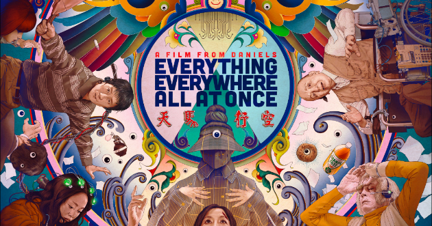

In a notable moment that will be remembered for years to come, the movie “Everything, Everywhere, All at Once” swept seven accolades at the Oscars this year. Historically, Asians have been underrepresented in the prestigious Academy Awards.
Across its 95 years of existence, only 229 nominations and 54 wins were identified as Asian. That`s 2 percent of all nominees and winners.

2023 accounted for the highest number of Asian nominees and winners, with eleven or more than half of the nominees this year were associated with the film “Everything, Everywhere, All at Once”.
And while celebration is in due, their achievements also reveal speaks volumes of the historical barriers Asians have been facing. Asian-American talents definitely did not sprout overnight, so their sucess of today paints a story of a long-held prejudice stewing that's only just been uncovered.
Discrimination within the film industry is also steeped into society. In recent years, the rise of Asian Hate in the United States continues to signal an ever-increasing need to highlight the losses among seeming progress. This article therefore seeks to answer:
To what extent has Asian-american portrayal in mainstream media progressed over the years?
Act 1: The increasing popularity of Asian portrayal on-screen
Films with proportional representation of Asian-Americans have steadily increased overtime. There is indication of films the include Asian characters in the cast, allowing for a slow but steady rise in proportional representaion over time.
What about films that do not include Asian representation at all? For the longest time, API characters were barely seen on-screen, giving rise to the epidemic of invisibility. However, we are definitely seeing this less and less as years pass.
Act 2: Progress, but at what cost?
However, simple trends can be deceiving. A closer look reveals that the increased representation belies little understanding of nuances in asian-american communities.
Throughout the years, there have been a substantial increase in number of films with API as leads. Amongs 1300 top grossing movies, there was a good 7 films in 2019 that was helmed by API leads. At the same time, while their popularity have been on the rise, it may not be surprising to know that the pool of API actors remains sparse. Not only were there significantly rare as compared to white actors, they were also largely represented by a select few stars. For instance, 14 our of the 44 films with API Leads/Co-leads was led by Dwayne Johnson.
Click each individual actors to see how many films they have been stars of!
Dwayne Johnson
Keanu Reeves
John Cho
This is significant, because with the absymal lack of leading roles, there is significantly less opportunities to explore nuances in charatcer portrayal. This is perhaps most obvious in the variety of stereotypes that have been crippling Asian-American characters for decades.
Sometimes, mere representation can be even harmful, as they tend to reinforce stereotypes. Here's a snapshot of some of the most prevailing stereotypes of Asian-American on screen and their on-going prevalence. You may hover over the bars and find out what each of the stereotypes mean.
Through the most prevalent stereotypes of "Model Minority" seeming positive, these stereotypes are ultimately reductive and serve to obscure the real discrimination faced by Asian-Americans.
Act 3: Change is coming
However, is that to say flawed representation not representation at all? It is perhaps important to note that the increasing trend of Asian-American representation on-screen, no matter how inaccurate, have paved the way for so many other actors and characters today.
Asian actors are increaisngly getting to play more fully-human characters, and these characters continue to build upon some of the prevalent streotypes, but giving nuances that are vital to appropriate character portrayal. Take the increasingly popular film "To All the Boys I've Loved Before", which showcases Asian lead Lara-Jean as a typical protagonist exploring sex, love and relationships in her youth.
While this article mainly covers top-grossing films, future studies can explore representaton on television, and consider specifcially covering Asians, as the diversities between NHPI and Asian communities are so vast it should.
Diary Entries
Diary Entry W9
Background
Data
Problem Statement
Concept Doc
(the entire of the intro is the bg) In a notable moment that will be remembered for years to come, the movie “Everything, Everywhere, All at Once” swept seven accolades at the Oscars this year. Historically, Asians have been underrepresented in the prestigious Academy Awards. In its 95 years of existence, only 229 nominees and 50 winners were identified as Asian. That`s 2 percent of all nominees and winners.
2023 accounted for the highest number of Asian nominees and winner. Eleven or more than half of the nominees this year were associated with the film “Everything, Everywhere, All at Once”.
While celebration is in due, their achievements also reveal speaks volumes of the historical barriers Asians have been facing.